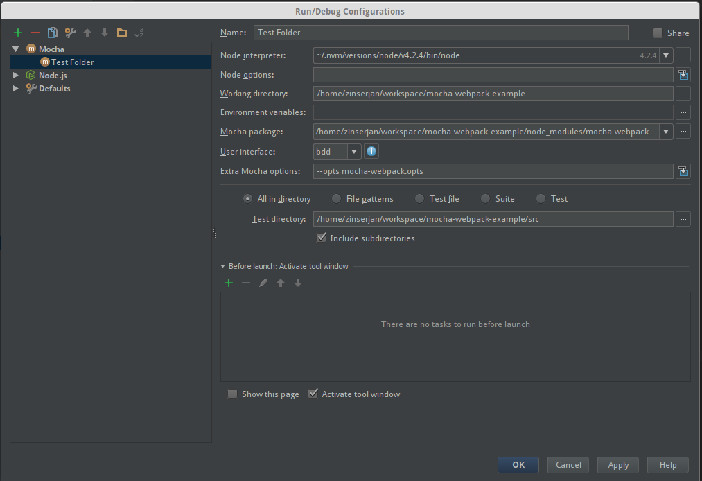

Using mocha-webpack in IDEs
Debug in IDEA (WebStorm, IntelliJ, ...)
- Make sure the
NodeJSrepository plugin is installed and enabled. The plugin is not bundled with every IDEA product, but it can be installed from the JetBrains plugin repository. - Create a Testrunner config

- replace
Mocha packagepath with path of mocha-webpack (should be a (dev-) dependency of your project) - set some additional configuration options (mocha-webpack.opts in this case)
- specify the tests to run
- replace
make sure that your webpack config contains the following (important for setting breakpoints in src):
{ ... output: { devtoolModuleFilenameTemplate : '[absolute-resource-path]', devtoolFallbackModuleFilenameTemplate: '[absolute-resource-path]?[hash]' }, ... }also you have to use a non-eval devtool in your webpack config, e.g.
{ ... devtool: '#inline-cheap-module-source-map', ... }- start your run configuration in debug mode
- happy testing

Note: Debugging in watch mode does not work with IDEA. Therefore you have rerun your debugger whenever you make changes. It's recommended to specify only a single test file to reduce start-up time.
Debug in Visual Studio Code
Unfortunately setting breakpoints like in IDEA isn't possible with Visual Studio Code, yet. There is an open issue in the VS Code Repo.
You can workaround this with debugger; statements in your code.
make sure that you use a inline devtool in your webpack config, e.g.
{ ... devtool: '#inline-cheap-module-source-map', ... }create a launch.json in your .vscode folder like the following:
{ "version": "0.2.0", "configurations": [ { "name": "Attach Debugger", "type": "node", "request": "attach", "port": 5858, "address": "localhost", "restart": true, "sourceMaps": false, "outFiles": [], "localRoot": "${workspaceRoot}", "remoteRoot": null }, { "name": "Run mocha-webpack", "type": "node", "request": "launch", "port": 5858, "program": "${workspaceRoot}/node_modules/mocha-webpack/bin/mocha-webpack", "stopOnEntry": false, "sourceMaps": true, "args": [], "cwd": "${workspaceRoot}", "preLaunchTask": null, "runtimeExecutable": null, "runtimeArgs": [ "--debug-brk" ], "env": { "NODE_ENV": "testing"}, "console": "internalConsole", "outFiles": [] } ] }- use
debugger;statements in your code to set the breakpoints - start the debugger with F5
- happy testing